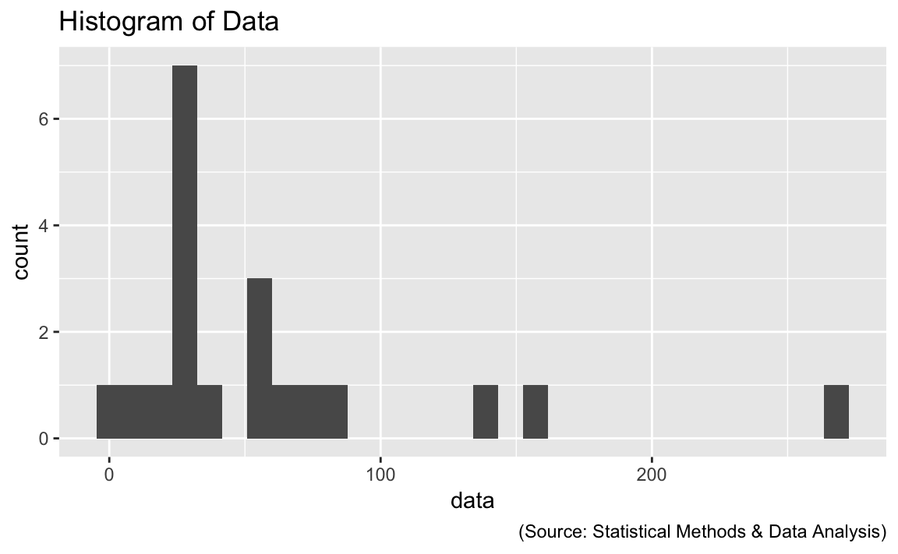
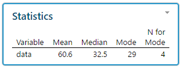
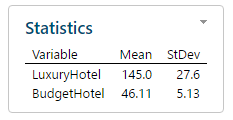
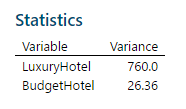
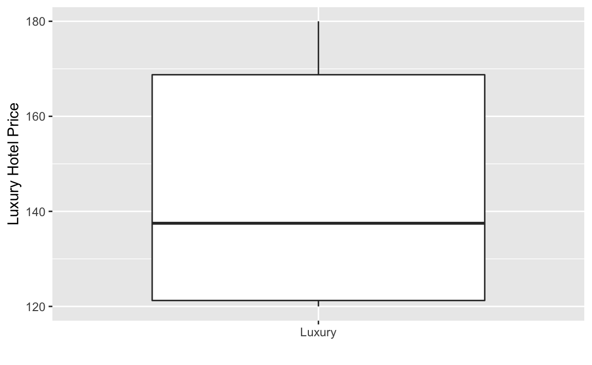
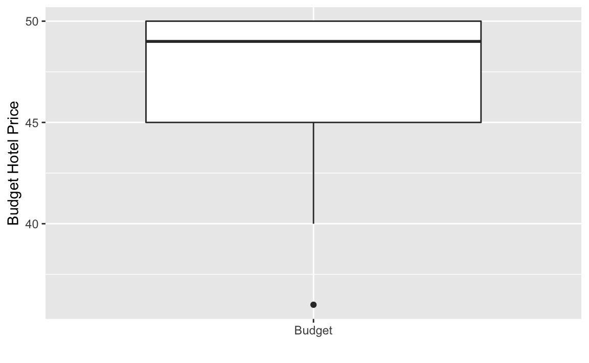
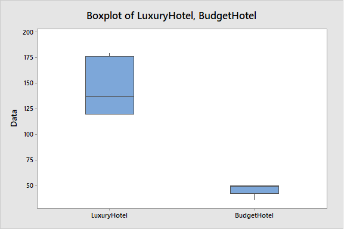

2 Homework 1
2.1 Problem 3.14
2.1.1 Read data set
2.1.2 EDA
ggplot(data=prob, aes(x=data)) +
geom_histogram() +
labs(title = "Histogram of Data") +
labs(caption = "(Source: Statistical Methods & Data Analysis)")
#> `stat_bin()` using `bins = 30`. Pick better value with `binwidth`.
2.1.3 Compute Mean, Median, Mode
The mean of the data set is: 60.65
The median of the data set is: 32.5
The mode of the data set is: 29

2.2 Problem 3.31
2.2.1 Read data set
2.2.2 Compute mean and standard deviation of the room rate for luxury hotels
The mean of the data set is: 145
The standard deviation of the data set is: 27.57
2.2.3 Compute mean and standard deviation of the room rate for budget hotels
The mean of the data set is: 46.11
The standard deviation of the data set is: 5.13

2.2.4 Variance
The variance of the data set is: 760
The variance of the data set is: 26.36

ggplot(data=prob, aes(x="Luxury", y=prob$LuxuryHotel)) +
geom_boxplot() +
xlab("") +
ylab("Luxury Hotel Price")
#> Warning: Removed 3 rows containing non-finite values (stat_boxplot).
ggplot(data=prob, aes(x="Budget", y=prob$BudgetHotel)) +
geom_boxplot() +
xlab("") +
ylab("Budget Hotel Price")

2.2.5 Variablity Reason
The coefficient of variation for Luxury hotel is 19.01
The coefficient of variation for Budget hotel is 11.13
2.2.6 Measure of Variablity
The dataset for budget hotels and luxury hotels are from two different populations so standard deviation does not provide a good comparison of the variability. Coefficient of variability (CV) does provide a better comparison because it takes into account the larger difference in the means between both budget and luxury hotels.
2.3 Problem 3.33
2.3.1 Read data set
2.4 Problem 4.16
2.4.1 Read data set
prob <- read_excel("Excel/CH04/ex4-16.xlsx")
prob
#> # A tibble: 4 x 5
#> Race O A B AB
#> <chr> <dbl> <dbl> <dbl> <dbl>
#> 1 White 0.36 0.322 0.088 0.032
#> 2 Black 0.07 0.029 0.025 0.005
#> 3 Asian 0.017 0.012 0.01 0.003
#> 4 All others 0.015 0.008 0.003 0.0012.4.1.2 P(White) - (P(White) U P(Type A))
The probability is 48 %
2.4.1.3 P(Asian) U P(Type A) + P(Asian) U P(Type B)
The probability 2.2 %
2.4.1.4 P(Type O) + P(Type B)
The probability 58.8 %
2.5 Problem 4.30
#Let D = event that loan defaulted
#Let !D = event that loan did not defaulted
#Let R1 = applicant has poor risk
#Let R2 = applicant has fair risk
#Let R3 = applicant has good risk
#P(D)
default <- .01
#P(!D)
non_default <- 1 - default
#P(R1|D)
default_poor_risk <- .3
#P(R2|D)
default_fair_risk <- .4
#P(R3|D)
default_good_risk <- .3
#P(R1|!D)
nondefault_poor_risk <- .1
#P(R2|!D)
nondefault_fair_risk <- .4
#P(R3|!D)
dnonefault_good_risk <- .5
## Posterior probality of default given a fair risk
#P(D | R2)
x <- default_fair_risk * default
y1 <- default_fair_risk * default
y2 <- nondefault_fair_risk * non_default
result <- x / (y1 + y2)
result
#> [1] 0.01
## Prior probality of default
#P(D)
default
#> [1] 0.01